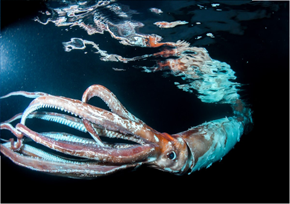

СЕМЕЙСТВА Cranchiidae (Кранхиды)
ГЛУБИНА:от 200–до 4000 метров
КОГДА ОТКРЫЛИ:был впервые описан наукой в 1925 году
ТИП ПИТАНИЯ:преимущественно глубоководной рыбой, зависая в толще воды
Это самый тяжелый моллюск, чьё поведение остается малоизученным из-за среды обитания.
Охотничья стратегия: Засадный хищник. В отличие от более активных родственников, колоссальный кальмар медленно плавает, экономя энергию, и использует длинные щупальца с крючьями для удержания крупной добычи
Среда обитания: Обитает в холодных водах Антарктики, погружаясь на глубину до 2 км.
Светочувствительность: Глаза, достигающие самых больших размеров в животном мире, позволяют видеть биолюминесцентные вспышки потенциальной добычи или хищников
Защита: Главный враг — кашалот. При защите кальмар может использовать чернильную завесу для дезориентации хищника
Вертикальные миграции: Исследования предполагают, что молодые особи могут подниматься выше, тогда как взрослые предпочитают большие глубины.

наверх